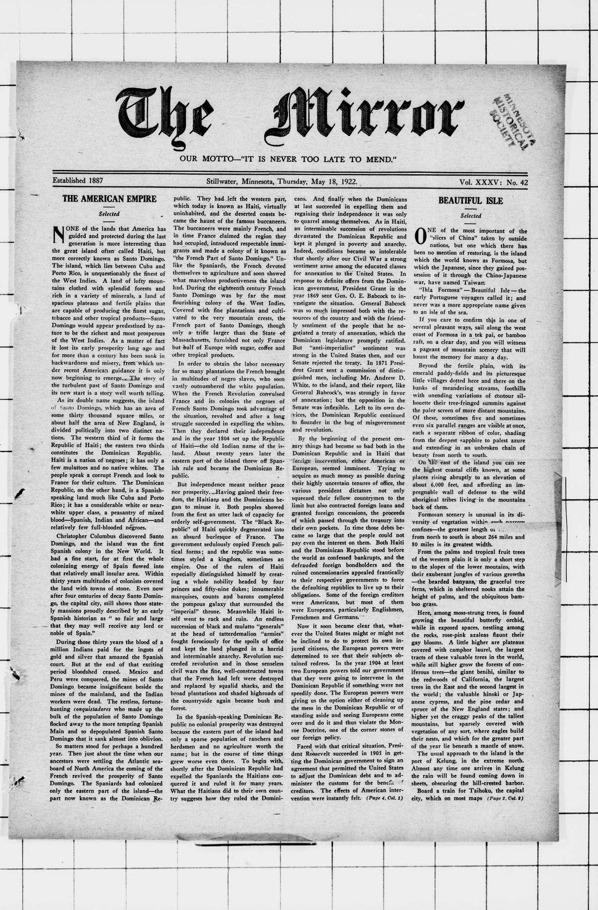

The American OccupationLa ocupación estadounidense
The recordsLos registros
In 1916 the United States Marines landed, and American coverage of the eight years that followed was largely written from inside the occupation's own frame. Progress was measured in miles of road, dollars of customs revenue, and sanitation campaigns; the military government's reports became the newspapers' facts, and Dominicans who resisted in the east — the gavilleros — were filed as bandits rather than as opponents of a foreign regime.En 1916 desembarcaron los marines de Estados Unidos, y la cobertura estadounidense de los ocho años siguientes se escribió en gran parte desde dentro del marco de la propia ocupación. El progreso se medía en millas de carretera, dólares de ingreso aduanero y campañas de saneamiento; los informes del gobierno militar se convirtieron en los hechos de los periódicos, y los dominicanos que resistían en el este — los gavilleros — fueron archivados como bandidos y no como opositores a un régimen extranjero.
Read the eraLeer la era
Dominican experience ran the other way: a country governed by foreign officers without its consent, its press censored, its people disarmed, its politics suspended. The occupation built a national constabulary before it withdrew in 1924, and that institution outlasted it — the officer who would rule the country for the next three decades was already rising through its ranks.La experiencia dominicana corrió en sentido contrario: un país gobernado por oficiales extranjeros sin su consentimiento, con su prensa censurada, su gente desarmada y su política suspendida. La ocupación construyó una guardia nacional antes de retirarse en 1924, y esa institución la sobrevivió: el oficial que gobernaría el país durante las tres décadas siguientes ya ascendía en sus filas.
Two readingsDos lecturas
When an article below praises the order the marines brought, it is worth asking whose order it was, and at whose expense it was kept. The American measure was quiet; the Dominican measure was sovereignty itself.Cuando un artículo de los que siguen elogie el orden que trajeron los marines, conviene preguntarse de quién era ese orden, y a costa de quién se mantuvo. La medida estadounidense era la tranquilidad; la medida dominicana era la soberanía misma.

THE AMERICAN EMPIRE
Under the headline 'Severe Earthquake at Santo Domingo,' the Rock Island Argus reports
Under the headline 'Severe Earthquake at Santo Domingo,' the Rock Island Argus reports that Georgetown University seismographs in Washington recorded two violent earth tremors, the heaviest occurring at 3:21 a.m. eastern time. Father Tondorf, director of the observatory, estimated that the epicenter of the second shock was situated approximately 2,400 miles from Washington and expressed concern that it would inflict heavy destruction in any inhabited area. A concurrent dispatch from Santo Domingo confirms that a severe earthquake shook the Dominican capital at 11:30 p.m. the previous night, though it resulted in no damage.
Bajo el titular «Fuerte terremoto en Santo Domingo», el Rock Island Argus informa que los sismógrafos de la Universidad de Georgetown en Washington registraron dos violentos temblores de tierra, produciéndose el más intenso a las 3:21 a.m., hora del este. El padre Tondorf, director del observatorio, calculó que el epicentro del segundo sismo se localizaba a unas 2,400 millas de Washington y expresó su temor de que causara graves destrozos en cualquier zona habitada. Un despacho paralelo desde Santo Domingo confirma que un fuerte terremoto sacudió la capital dominicana a las 11:30 de la noche anterior, aunque no causó daños.
An essay published in The Washington Herald examines President Ulysses S. Grant's
An essay published in The Washington Herald examines President Ulysses S. Grant's administration, focusing on how his determination to annex Santo Domingo alienated influential leaders within his party. Grant's insistence on annexation brought about an open breach with Charles Sumner, the chairman of the Senate Committee on Foreign Affairs, while also driving Horace Greeley, the trenchant editor of the New-York Tribune, into active opposition. The account emphasizes that Sumner represented the elevated traditions of the Republican Party against Grant's pursuit of power, while Greeley's daily editorials mobilized thousands of rural readers against the administration.
Un ensayo publicado en The Washington Herald examina la administración del presidente Ulysses S. Grant, centrándose en cómo su determinación de anexar Santo Domingo distanció a líderes influyentes dentro de su partido. La insistencia de Grant en la anexión provocó una ruptura abierta con Charles Sumner, presidente del Comité de Relaciones Exteriores del Senado, al tiempo que impulsó a Horace Greeley, el incisivo editor del New-York Tribune, hacia una oposición activa. El texto destaca que Sumner representaba las tradiciones más elevadas del Partido Republicano frente a la búsqueda de poder de Grant, mientras que los editoriales diarios de Greeley movilizaron a miles de lectores rurales contra el gobierno.
A severe earthquake occurred during the previous night in the Dominican capital
A severe earthquake occurred during the previous night in the Dominican capital at 11:30 o'clock, a dispatch from Santo Domingo published in the Evening Star under an April 24 dateline reports. The brief notice states that no damage was caused by the tremor.
Un fuerte terremoto ocurrió en la capital dominicana a las 11:30 de la noche anterior, según un despacho desde Santo Domingo publicado en el Evening Star bajo datación del 24 de abril. La breve noticia señala que el temblor no causó ningún daño.
A Santo Domingo dispatch to the El Paso Herald reports that General Juan I. Jimenez
A Santo Domingo dispatch to the El Paso Herald reports that General Juan I. Jimenez, President of the Dominican Republic, was impeached on Monday by the Chamber of Deputies for an alleged constitutional violation regarding the budget. The impeachment motion has been transmitted to the Senate, where approval of the measure is anticipated. The report adds that Santo Domingo remains quiet and that order prevails throughout the country.
Un despacho de Santo Domingo para el El Paso Herald informa que el general Juan I. Jiménez, presidente de la República Dominicana, fue sometido a juicio político el lunes por la Cámara de Diputados por una presunta violación constitucional en relación con el presupuesto. La moción de juicio político fue enviada al Senado, donde se anticipa la aprobación de la medida. El informe añade que la ciudad de Santo Domingo permanece en calma y que el orden prevalece en todo el país.
Reporting from Santo Domingo, the Evening Star states that Rear Admiral William R. Caperton
Reporting from Santo Domingo, the Evening Star states that Rear Admiral William R. Caperton, who had been commanding United States forces in Haiti, arrived in the Dominican capital aboard the converted cruiser Prairie. The account notes that the city remained quiet upon his arrival. It further states that President Jimenez of the Dominican Republic was impeached the preceding day on charges of violating the constitution in relation to the budget.
Informando desde Santo Domingo, el Evening Star señala que el contralmirante William R. Caperton, quien había estado al mando de las fuerzas de Estados Unidos en Haití, llegó a la capital dominicana a bordo del crucero convertido Prairie. El informe señala que la ciudad permanecía en calma a su llegada. Añade además que el presidente Jiménez de la República Dominicana fue sometido a juicio político el día anterior bajo cargos de violación a la constitución en relación con el presupuesto.
Coverage in The Birmingham Age-Herald recounts that General Juan I. Jimines
Coverage in The Birmingham Age-Herald recounts that General Juan I. Jimines, President of the Dominican Republic, was impeached by the Chamber of Deputies for an alleged violation of the constitution regarding the budget. The motion for the president's impeachment was referred to the Senate, where approval of the action is anticipated. The report adds that Santo Domingo remains quiet and that order prevails across the country.
La cobertura en The Birmingham Age-Herald relata que el general Juan I. Jimines, presidente de la República Dominicana, fue sometido a juicio político por la Cámara de Diputados por una presunta violación a la constitución respecto al presupuesto. La moción para el juicio político del presidente fue remitida al Senado, donde se anticipa la aprobación de la medida. El informe añade que Santo Domingo permanece en calma y que el orden prevalece en todo el país.
A news brief from Santo Domingo in the Grand Forks Daily Herald reports
A news brief from Santo Domingo in the Grand Forks Daily Herald reports that General Juan I. Jimenez, President of the Dominican Republic, was impeached yesterday by the Chamber of Deputies over an alleged violation of the constitution relating to the budget. The impeachment motion has been sent to the Senate, where its approval is expected. The dispatch adds that the capital is quiet and that order prevails throughout the country.
Una breve noticia desde Santo Domingo en el Grand Forks Daily Herald informa que el general Juan I. Jiménez, presidente de la República Dominicana, fue sometido a juicio político ayer por la Cámara de Diputados por una presunta violación a la constitución relacionada con el presupuesto. La moción de juicio político fue enviada al Senado, donde se espera su aprobación. El despacho agrega que la capital está en calma y que el orden reina en todo el país.
Dispatches from Washington and Santo Domingo published in the Daily Kennebec Journal report
Dispatches from Washington and Santo Domingo published in the Daily Kennebec Journal report on the crisis surrounding the impeachment of General Jiminez. Following the Chamber of Deputies' vote to impeach President Jiminez for alleged constitutional violations in drafting the budget—with a Senate verdict due within 48 hours—the United States dispatched Rear Admiral Caperton with the cruiser Prairie and marines to halt factional moves against the administration. Caperton was ordered to warn leaders behind the impeachment that the United States would not tolerate intrigues, and he subsequently arrived in the quiet capital from Haiti.
Despachos de Washington y Santo Domingo publicados en el Daily Kennebec Journal informan sobre la crisis en torno al juicio político del general Jiménez. Tras la votación de la Cámara de Diputados para procesar al presidente Jiménez por presuntas violaciones constitucionales en la redacción del presupuesto —con un veredicto del Senado previsto dentro de 48 horas—, Estados Unidos envió al contralmirante Caperton con el crucero Prairie e infantes de marina para detener las maniobras facciosas contra el gobierno. Caperton recibió órdenes de advertir a los dirigentes tras el juicio político que Estados Unidos no toleraría intrigas, arribando posteriormente a la tranquila capital procedente de Haití.
Rear Admiral Caperton arrived in Santo Domingo as President Jimenez of the Dominican Republic faced impeachment on a…
Rear Admiral Caperton arrived in Santo Domingo as President Jimenez of the Dominican Republic faced impeachment on a charge connected with the constitution and the budget, the paper reports. It says the city was quiet and that the men behind the impeachment were warned that the United States would not tolerate the overthrow of the government.
El contralmirante Caperton llegó a Santo Domingo cuando el presidente Jiménez de la República Dominicana enfrentaba un juicio político por un cargo relacionado con la constitución y el presupuesto, informa el periódico. Dice que la ciudad estaba tranquila y que a los hombres detrás del juicio político se les advirtió que Estados Unidos no toleraría el derrocamiento del gobierno.
A short wire brief from Santo Domingo in The Hattiesburg News reports
A short wire brief from Santo Domingo in The Hattiesburg News reports that General Juan I. Jimenez, President of the Dominican Republic, was impeached today by the Chamber of Deputies. The action was taken based on an alleged violation of the national constitution in connection with the budget.
Una breve noticia cablegráfica desde Santo Domingo en The Hattiesburg News informa que el general Juan I. Jiménez, presidente de la República Dominicana, fue sometido a juicio político hoy por la Cámara de Diputados. La medida se tomó con base en una presunta violación a la constitución nacional en relación con el presupuesto.
General Juan I. Jimenez, President of the Dominican Republic
General Juan I. Jimenez, President of the Dominican Republic, was impeached on May 1 by the Chamber of Deputies, a news dispatch in the Dakota County Herald reports. The impeachment proceedings were brought forward over an alleged violation of the constitution in connection with the national budget.
El general Juan I. Jiménez, presidente de la República Dominicana, fue sometido a juicio político el 1 de mayo por la Cámara de Diputados, según un despacho noticioso en el Dakota County Herald. El proceso de juicio político se inició por una presunta violación a la constitución en relación con el presupuesto nacional.
A London dispatch in the Evening Capital News states that James M. Sullivan of New York
A London dispatch in the Evening Capital News states that James M. Sullivan of New York, former American minister to Santo Domingo, was arrested in Dublin on charges of complicity in the Irish rebellion. The article notes that Sullivan had sailed for Liverpool the previous July ostensibly to visit his mother in Ireland, shortly after being forced to resign his Dominican post as a result of a commission investigation. The account recalls that his appointment had been credited to Bryan, who had written to Dominican Receiver General Vick seeking positions to reward deserving Democrats before persistent charges and a second inquiry ended Sullivan's diplomatic tenure.
Un despacho de Londres en el Evening Capital News informa que James M. Sullivan de Nueva York, exministro estadounidense en Santo Domingo, fue arrestado en Dublín bajo cargos de complicidad en la rebelión irlandesa. El artículo señala que Sullivan había zarpado hacia Liverpool en julio anterior con el pretexto de visitar a su madre en Irlanda, poco después de ser obligado a renunciar a su cargo dominicano como resultado de una investigación comisionada. El relato recuerda que su nombramiento se había atribuido a Bryan, quien había escrito al receptor general de aduanas en la República Dominicana, Vick, solicitando puestos para recompensar a demócratas meritorios antes de que acusaciones persistentes y una segunda investigación pusieran fin a su labor diplomática.
An Associated Press dispatch from London in the Tonopah Daily Bonanza announces
An Associated Press dispatch from London in the Tonopah Daily Bonanza announces that James Sullivan of New York, former American minister to Santo Domingo, was arrested in Dublin on charges of complicity in the Irish rebellion. The dispatch notes that Sullivan, a native of Ireland who had sailed for Limerick in July ostensibly to visit his mother, had previously been asked to resign his Dominican post after an investigation headed by Senator Phelan found him guilty of indiscretions. It adds that Sullivan had previously served as attorney for Jack Rose in the Rosenthal murder case.
Un despacho de la Associated Press desde Londres en el Tonopah Daily Bonanza informa que James Sullivan de Nueva York, exministro estadounidense en Santo Domingo, fue arrestado en Dublín bajo cargos de complicidad en la rebelión irlandesa. El despacho señala que Sullivan, oriundo de Irlanda que había zarpado hacia Limerick en julio supuestamente para visitar a su madre, había sido presionado previamente para dimitir de su puesto dominicano luego de que una comisión de investigación encabezada por el senador Phelan determinara que incurrió en indiscreciones. Agrega que Sullivan había actuado como abogado de Jack Rose en el caso Rosenthal.
Writing in the Evening Star, a correspondent reviews the controversial
Writing in the Evening Star, a correspondent reviews the controversial diplomatic career of James M. Sullivan following his resignation as United States minister to the Dominican Republic. An investigation headed by Senator Phelan of California censured Sullivan for official indiscretions—including involvement in contracts concerning fellow Americans in Santo Domingo—while commending certain administrative reforms he enacted. The report details how Sullivan's appointment was credited to former Secretary Bryan, who had inquired of Receiver General Vick regarding posts for deserving Democrats, while Secretary Tumulty disclaimed responsibility for the selection.
Escribiendo en el Evening Star, un corresponsal repasa la controvertida carrera diplomática de James M. Sullivan tras su renuncia como ministro de los Estados Unidos en la República Dominicana. Una investigación encabezada por el senador Phelan de California censuró a Sullivan por indiscreciones oficiales —incluida su participación en contratos relativos a otros estadounidenses en Santo Domingo—, aunque elogió ciertas reformas administrativas que llevó a cabo. El informe detalla cómo el nombramiento de Sullivan se atribuyó al exsecretario Bryan, quien había preguntado al receptor general Vick sobre puestos para demócratas meritorios, mientras que el secretario Tumulty negó su responsabilidad en la designación.
A series of dispatches in the Honolulu Star-Bulletin report
A series of dispatches in the Honolulu Star-Bulletin report on the arrest in Dublin of James Sullivan, former American minister to Santo Domingo, on charges of complicity in the Irish rebellion after having sailed from New York to visit his mother in Limerick. In Washington, Sullivan's wife appealed to Secretary of State Lansing to inquire into his detention by British authorities, while friends in New York maintained his innocence. The dispatches also recount Sullivan's resignation from his Dominican post following an investigation by Senator Phelan of California, who concluded he was temperamentally unfit, alongside brief mention of United States naval and marine operations guarding Dominican customs receipts under a virtual protectorate.
Una serie de despachos en el Honolulu Star-Bulletin informan sobre el arresto en Dublín de James Sullivan, exministro estadounidense en Santo Domingo, bajo cargos de complicidad en la rebelión irlandesa tras haber zarpado de Nueva York para visitar a su madre en Limerick. En Washington, la esposa de Sullivan apeló ante el secretario de Estado Lansing para que investigara su detención por las autoridades británicas, mientras amigos en Nueva York sostenían su inocencia. Los despachos relatan asimismo la renuncia de Sullivan a su cargo dominicano tras una investigación del senador Phelan de California, quien concluyó que no era apto temperamentalmente, junto con una breve mención de las operaciones navales y de infantería de marina de Estados Unidos para proteger las rentas aduaneras dominicanas bajo un protectorado virtual.
A Washington report in The Topeka State Journal states that Rear Admiral
A Washington report in The Topeka State Journal states that Rear Admiral Caperton, commanding American naval forces in Dominican waters, has received broad instructions to use whatever force is necessary to maintain the constitutional government of the Dominican Republic. Washington officials instructed the admiral that the United States views the impeachment of President Jimenez as a thinly veiled revolutionary plot. To uphold the government, Caperton is authorized to land bluejackets and marines in Santo Domingo if required.
Un informe de Washington en The Topeka State Journal señala que el contralmirante Caperton, al mando de las fuerzas navales estadounidenses en aguas dominicanas, ha recibido amplias instrucciones de usar toda la fuerza que sea necesaria para mantener el gobierno constitucional de la República Dominicana. Las autoridades en Washington instruyeron al almirante que Estados Unidos considera el juicio político contra el presidente Jiménez como una conspiración revolucionaria apenas disimulada. Para sostener al gobierno, Caperton está autorizado a desembarcar marineros e infantes de marina en Santo Domingo si fuera necesario.
Dispatches from Santo Domingo and Washington published in The Laramie Republican report
Dispatches from Santo Domingo and Washington published in The Laramie Republican report that General Juan I. Jimenez, President of the Dominican Republic, declared the capital in a state of siege and transferred the seat of government to San Geronimo following his impeachment by the Chamber of Deputies on May 2. From Washington, Rear Admiral Caperton was placed under broad instructions to maintain the constitutional government in Dominican waters. American officials emphasized that the United States considers the presidential impeachment to be a disguised rebellion.
Despachos desde Santo Domingo y Washington publicados en The Laramie Republican informan que el general Juan I. Jiménez, presidente de la República Dominicana, declaró la capital en estado de sitio y trasladó la sede del gobierno a San Gerónimo tras ser sometido a juicio político por la Cámara de Diputados el 2 de mayo. Desde Washington, el contralmirante Caperton recibió amplias instrucciones para sostener al gobierno constitucional en aguas dominicanas. Las autoridades estadounidenses subrayaron que Estados Unidos considera el juicio político presidencial como una rebelión disfrazada.
According to a Santo Domingo dispatch in the River Falls Journal
According to a Santo Domingo dispatch in the River Falls Journal, General Juan I. Jimines, President of the Dominican Republic, was impeached on May 2 by the Chamber of Deputies. The proceedings against the executive were initiated over an alleged violation of the constitution in connection with the national budget.
Según un despacho de Santo Domingo en el River Falls Journal, el general Juan I. Jimines, presidente de la República Dominicana, fue sometido a juicio político el 2 de mayo por la Cámara de Diputados. El proceso contra el mandatario se inició por una presunta violación a la constitución en relación con el presupuesto nacional.
A London dispatch in the New Britain Herald reports that James M. Sullivan of New York
A London dispatch in the New Britain Herald reports that James M. Sullivan of New York, former American minister to Santo Domingo, has been arrested in Dublin on charges of complicity in the Irish rebellion. Sullivan had sailed for Liverpool the previous July ostensibly to visit his mother in Limerick, shortly after being forced to resign his Dominican diplomatic post on July 23 following an official inquiry led by Senator Phelan of California. The investigation censured Sullivan for indiscretions involving contracts with other Americans in Santo Domingo while commending certain administrative reforms. The article notes Sullivan's local Connecticut ties, having worked as a journalist in the state, graduated from Yale Law School, and practiced law there.
Un despacho de Londres en el New Britain Herald informa que James M. Sullivan de Nueva York, exministro de los Estados Unidos en Santo Domingo, fue arrestado en Dublín bajo cargos de complicidad en la rebelión irlandesa. Sullivan había zarpado hacia Liverpool en julio anterior supuestamente para visitar a su madre en Limerick, poco después de verse obligado a renunciar a su puesto diplomático dominicano el 23 de julio tras una investigación oficial dirigida por el senador Phelan de California. La investigación censuró a Sullivan por indiscreciones vinculadas a contratos con otros estadounidenses en Santo Domingo, al tiempo que reconoció ciertas reformas administrativas. El artículo destaca los vínculos locales de Sullivan en Connecticut, donde trabajó como periodista, se graduó de la Facultad de Derecho de Yale y ejerció la abogacía.
General Juan I. Jimenez, President of the Dominican Republic
General Juan I. Jimenez, President of the Dominican Republic, was impeached by the Chamber of Deputies, a brief notice from Santo Domingo in The Ely Miner reports. The impeachment proceeding was initiated over an alleged violation of the constitution in connection with the national budget.
El general Juan I. Jiménez, presidente de la República Dominicana, fue sometido a juicio político por la Cámara de Diputados, según una breve noticia desde Santo Domingo en The Ely Miner. El proceso de juicio político se inició por una presunta violación a la constitución en relación con el presupuesto nacional.
A wire bulletin from Honolulu published in The Maui News reports
A wire bulletin from Honolulu published in The Maui News reports that unrest has gripped Santo Domingo and that the United States is actively intervening. Admiral Caperton received orders from the Navy Department to preserve order and ensure that the government is maintained. The dispatch adds that Dominican President Jimenez, having been impeached, has refused to appear for trial.
Un boletín cablegráfico de Honolulú publicado en The Maui News informa que los disturbios se han apoderado de Santo Domingo y que Estados Unidos está interviniendo activamente. El almirante Caperton recibió órdenes del Departamento de la Armada para preservar el orden y garantizar el mantenimiento del gobierno. El despacho añade que el presidente dominicano Jiménez, habiendo sido sometido a juicio político, se ha negado a comparecer a juicio.
The Montgomery Advertiser reports that James M. Sullivan, formerly
The Montgomery Advertiser reports that James M. Sullivan, formerly American Minister to Santo Domingo, was arrested in Dublin on charges of complicity in the Irish rebellion. A Washington dispatch reviews Sullivan's brief and sensational diplomatic career in the Dominican Republic, which culminated in his resignation following an inquiry by a State Department commission headed by Senator Phelan. Although the investigation examined Sullivan's alleged involvement in contracts on the island, no evidence was found that he had profited, though he was deemed guilty of indiscretions unfitting him for his post.
The Montgomery Advertiser informa que James M. Sullivan, exministro de Estados Unidos en Santo Domingo, fue arrestado en Dublín bajo acusaciones de complicidad en la rebelión irlandesa. Un despacho de Washington reseña la breve y sensacional carrera diplomática de Sullivan en la República Dominicana, la cual culminó en su renuncia tras una indagatoria realizada por una comisión del Departamento de Estado encabezada por el senador Phelan. Aunque la investigación examinó la supuesta participación de Sullivan en contratos dentro de la isla, no se hallaron pruebas de que hubiera obtenido beneficios económicos, si bien se determinó que cometió indiscreciones que lo inhabilitaban para su cargo.
A Santo Domingo dispatch to the Evening times-Republican reports
A Santo Domingo dispatch to the Evening times-Republican reports that marines were landed from the American converted cruiser Prairie to protect the United States legation. The dispatch notes that the political situation in the Dominican Republic is critical, resulting from an attempt by factional leaders to overthrow the administration of President Jimines.
Un despacho de Santo Domingo para el Evening times-Republican informa que infantes de marina fueron desembarcados desde el crucero convertido estadounidense Prairie para proteger la legación de Estados Unidos. El despacho señala que la situación política en la República Dominicana es crítica, como consecuencia de un intento de líderes facciosos por derrocar al gobierno del presidente Jimines.
A brief report from Santo Domingo published in the Dakota farmers'
A brief report from Santo Domingo published in the Dakota farmers' leader states that General Juan Jimines, President of the Dominican Republic, was impeached on May 1 by the Chamber of Deputies. The impeachment proceedings were instituted over an alleged violation of the constitution in connection with the national budget.
Un breve informe desde Santo Domingo publicado en el Dakota farmers' leader señala que el general Juan Jimines, presidente de la República Dominicana, fue sometido a juicio político el 1 de mayo por la Cámara de Diputados. El proceso de juicio político se inició debido a una supuesta violación de la constitución en relación con el presupuesto nacional.
Reporting from Washington, the Evening Public Ledger states
Reporting from Washington, the Evening Public Ledger states that the United States government is awaiting a full report regarding the arrest in Dublin of James Mark Sullivan, formerly American Minister to Santo Domingo, who is charged with complicity in the Irish rebellion. American officials are seriously concerned over the detention, noting Sullivan's prominence in Irish-American circles and warnings that harsh British measures could provoke reprisals, while his friends maintain that his visit was undertaken solely to recover his health after his service in Santo Domingo. The State Department and the White House have received numerous appeals urging intervention, and Sullivan's wife has personally requested official assistance to secure her husband's immediate release.
Informando desde Washington, el Evening Public Ledger señala que el gobierno de Estados Unidos espera un informe completo respecto al arresto en Dublín de James Mark Sullivan, exministro estadounidense en Santo Domingo, acusado de complicidad en la rebelión irlandesa. Las autoridades estadounidenses manifiestan gran preocupación por la detención, destacando la notoriedad de Sullivan en los círculos irlandeses-estadounidenses y las advertencias de que medidas británicas severas podrían suscitar represalias, mientras sus allegados sostienen que su viaje obedeció únicamente a recuperar su salud tras su servicio en Santo Domingo. El Departamento de Estado y la Casa Blanca han recibido numerosos llamamientos solicitando su intervención, y la esposa de Sullivan ha pedido personalmente ayuda oficial para lograr la liberación inmediata de su esposo.